class: center, middle, inverse # MC - Data Agreement --- ## MC Simulation - Perform MC simulations via a heavily modified version of AllpixSquared, a pixel detector framework based on Geant4 - Simulate XRF for various materials as well as an `\(\mathrm{Am}^{241}\)` source - Simulation yields results of physical interactions. Therefore, effects like charge sharing and repulsion are included - Detector resolution is not included, leading to sharp lines in the spectrum - Implement resolution by Gaussian smearing the spectrum according to a resolution function <p style="text-align:center;"><img src="images/raw_mc_spectrum.svg" alt="raw_mc_spectrum" width="900px" align="middle"/></p> --- ## Direct Agreement - Take XRF data of various materials with an energy calibrated detector - Perform log-likelihood fit to obtain agreement of MC and data: - Number `\(n\)` of events per histogram bin follows Poisson distribution with mean and variance `\(\lambda\)`: $$ P(\lambda, n) = \frac{e^{-\lambda}\lambda^n}{n!} $$ - Compare MC, with entries `\(\mu_i\)`, and data, with entries `\(\kappa_i\)`, histograms bin by bin via likelihood function $$ L(\mu, \kappa) = \prod_{i=1}^N P(\mu_i, \kappa_i)$$ - Minimize log-likelihood function $$ \mathcal L(\mu, \kappa) = -\mathrm{ln}\left(L(\mu, \kappa)\right) = \sum_{i=1}^N (\mu_i - \kappa_i\mathrm{ln}(\mu_i) + \mathrm{ln}(\kappa_i!)) $$ --- ## Direct Agreement Example - Gd Use resolution function $$ A\exp\left(-k\cdot E\right) + c $$ and perform log-likelihood fit <p style="text-align:center;">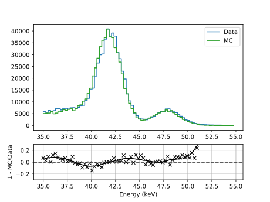</p> --- ## Direct Agreement - Multi Fit - Instead of a fit to one dataset, perform fit on multiple datasets at once. Here: Gd, Sn, Ba (XRF), and Am - The multi fit is divided in single fits, sharing the same fit parameters. For each iteration, the single fits yield `\(\mathcal L\)`, where the multi fit minimizes the sum of the `\(\mathcal L\)`s - Results: Sn (left), Ba (right) <div> <p style="text-align:center;"> 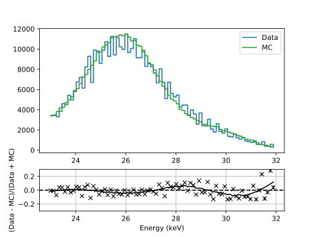 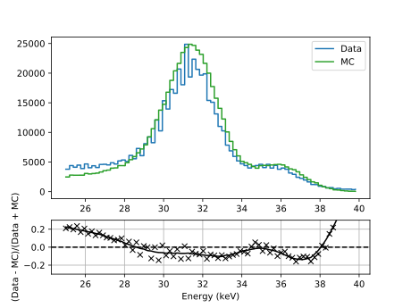 </p> </div> --- ## Direct Agreement - Multi Fit - Results: Gd (left), Am (right) - Binning effects present in some plots - Deviation `\(\frac{\mathrm{Data} - \mathrm{MC}}{\mathrm{Data} + \mathrm{MC}}\)` for majority of data points within 20% range <div> <p style="text-align:center;"> 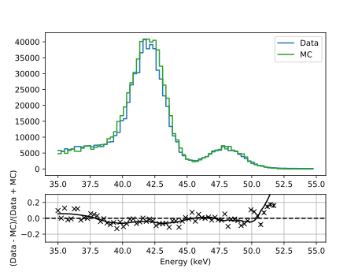 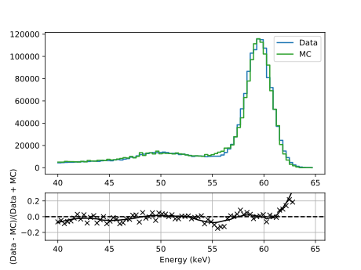 </p> </div> --- ## Results: Direct Agreement and Energy Resolution - Method yields the energy resolution for the taken datasets - Simultaneously, the energy agreement of data and MC is analyzed - Different method to get detector's resolution: test pulse measurement - Resolution defined as FWHM divided by energy <p style="text-align:center;">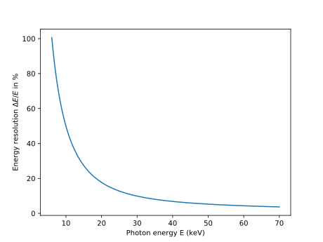</p> --- ## Mystery Peaks - Data regions were cut to XRF peak regions previously - But: disagreement at certain energies, especially at about 26 and 33 keV - 26 keV: might be Sn or Sb, 33 keV: ? <p style="text-align:center;">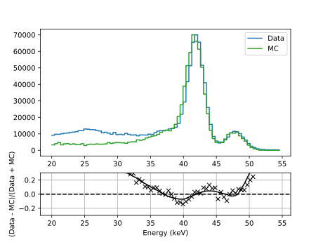</p> --- ## Dose Agreement (PTB May) - Previously, only energy agreement of data and MC was considered - Dose agreement describes the correlation of mean energy and mean number of counts - Data taken at PTB (May): Mean energy (left), Mean number of counts (right) - All curves normalized to second data point of slot 1 data - Slot 1: Al Chimney, Slot 2: Al, Slot 3: Sn <div> <p style="text-align:center;"> 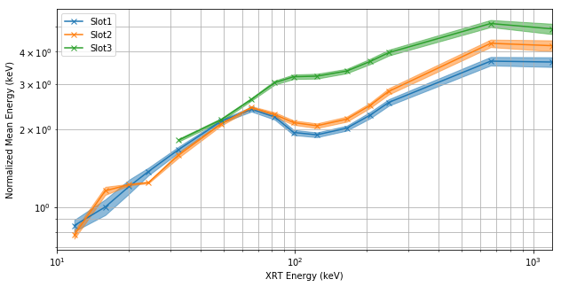 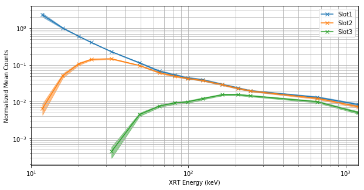 </p> </div> --- ## Dose Agreement (MC) - Same curves for simulated MC data - At the moment only for energies < 380 keV <div> <p style="text-align:center;"> 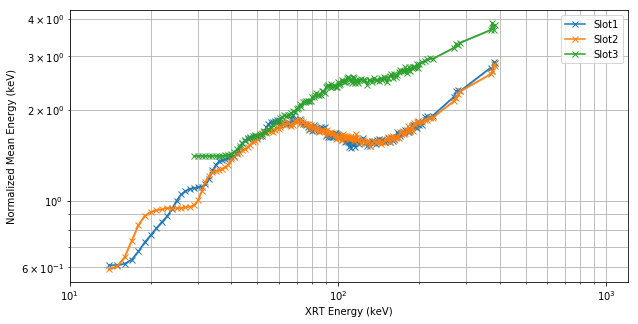 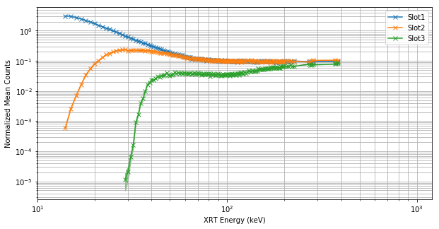 </p> </div> --- ## Dose Agreement - MC vs. Data (Energy of Slot 1) - Deviation for the mean energy of slot 1 - Disagreement possibly for low energies <p style="text-align:center;">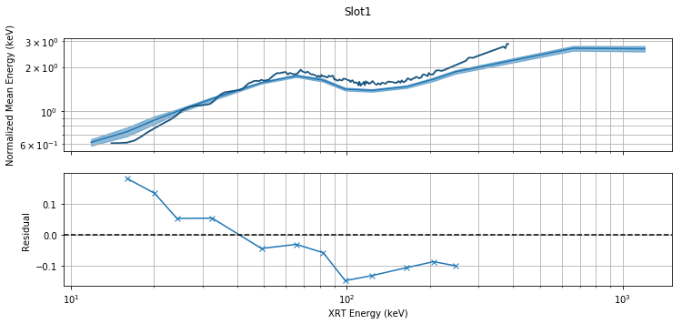</p> --- ## Dose Agreement - Mean Energy Issue of Slot 1 - Mean energy and mean counts per pixel for a XRT voltage of 15 kV - Mean energies larger than 15 keV for all pixels `\(\rightarrow\)` Reason currently unknown - Quick and dirty fix: Decrease energies in the region < 50 keV with function $$ E' = -E \cdot \frac{3.5}{50} + 3.5 $$ <div> <p style="text-align:center;"> 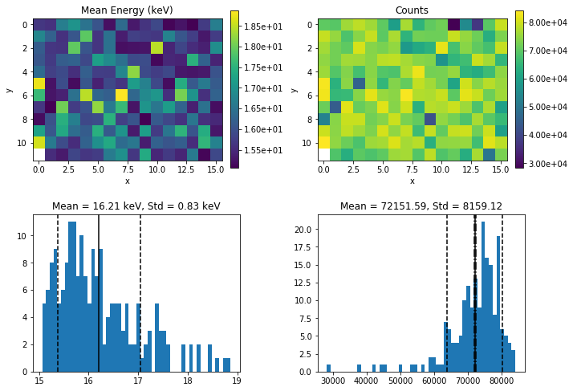 </p> </div> --- ## Dose Agreement - Mean Energy Issue of Slot 1 <video controls> <source src="images/binLoop/test.mp4" type="video/mp4"> </video> --- ## Dose Agreement - MC vs. Data (Counts of Slot 2) - Deviation for the mean counts of slot 2 - Disagreement for low energies <p style="text-align:center;">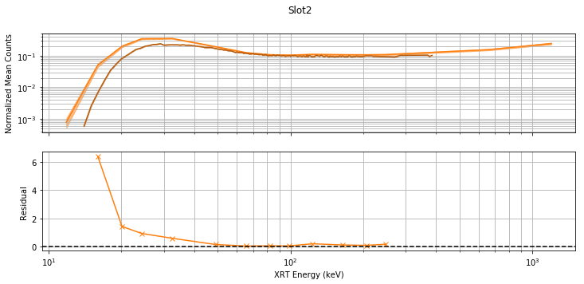</p> --- ## Al-Cap Issue - Shape of the Al-cap in simulation does not resemble the real one - Heatmap shows counts per pixel for large pixels only - Search for maximum and get number of pixels within rings of a width of 1 pixel <p style="text-align:center;">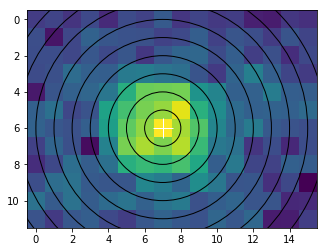</p> --- ## Al-Cap Issue - Use mean energy to yield mean mass attenuation coefficient from XCOM - Assume that the Al-cap has a perfect thickness of 2 at the edges of the sensor - Take the fraction of the number of events within the rings and solve Beer-Lambert's law for the thickness at a certain position - Fix is to implement correct shape of the cap in the simulation, but might differ from cap to cap <p style="text-align:center;">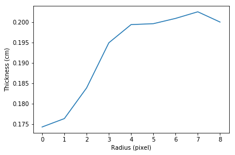</p> --- ## Dose Agreement - MC vs. Data (Counts of Slot 3) - Deviation for the mean counts of slot 3 - Disagreement for low energies <p style="text-align:center;">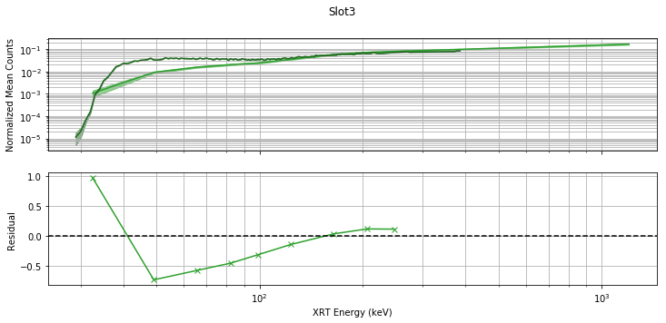</p> --- ## Dose Agreement: MC-only Conversion Factors - Implemented fixes: - Lower energies for slot 1 if energy < 50 keV - Decrease number of counts of slot 2 via function - Fix values in conversion factors for low energies for Al- and Sn-cap detectors - Comparison of results for `\(H_\mathrm{p}(10)\)`: MC (left), data-based fit (right) <div> <p style="text-align:center;"> 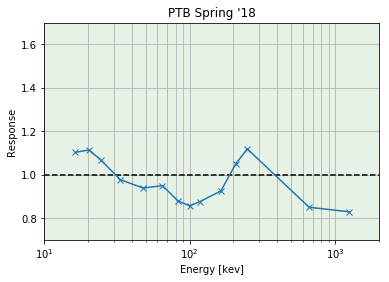 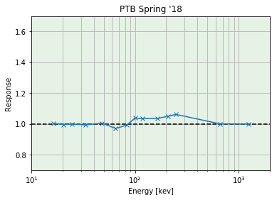 </p> </div> --- ## Dose Agreement: MC-only Conversion Factors (PTB May) - Comparison of results for `\(H_\mathrm{p}(10)\)`: MC (left), data-based fit (right) - Low energy problem of slot 1 present for both sets of conversion factors <div> <p style="text-align:center;"> 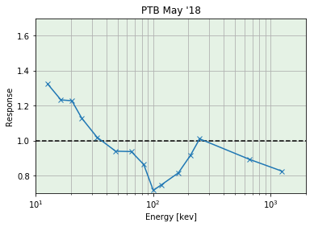 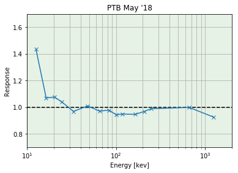 </p> </div> --- ## Dose Agreement: Responses for Angular Measurements (`\(H_\mathrm{p}(10)\)`) - Conversion factors for `\(H_\mathrm{p}(10)\)` - Left: old Al-chimney, Right: new one - With new Al-chimney, dose, and therefore mean number of counts, almost independent from energy <div> <p style="text-align:center;"> 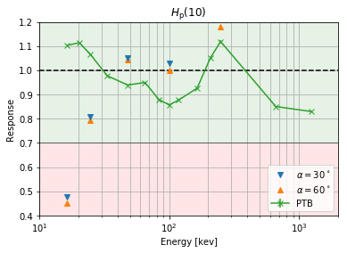 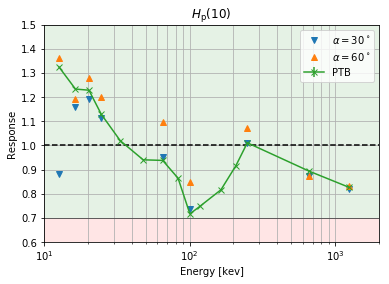 </p> </div> --- ## Dose Agreement: Responses for Angular Measurements (`\(H_\mathrm{p}(0.07)\)`) - Conversion factors for `\(H_\mathrm{p}(0.07)\)` - Left: MC, Right: data-only, including angular measurements - Even with new Al-chimney, impossible to fit dose under angles <div> <p style="text-align:center;"> 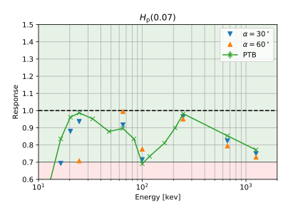 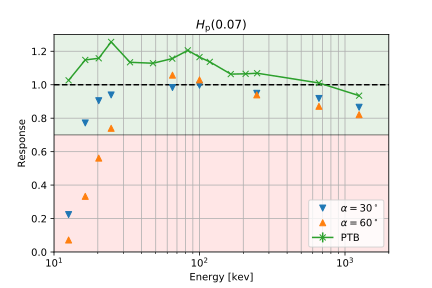 </p> </div> --- ## Difference between `\(H_\mathrm{p}(10)\)` and `\(H_\mathrm{p}(0.07)\)` - `\(H_\mathrm{p}(10)\)` changes tremendously with the incident angle, `\(H_\mathrm{p}(0.07)\)` does not - During `\(H_\mathrm{p}(10)\)`-PTB measurements, the dose rate in Gy is incremented in order to receive a constant dose rate in Sv `\(\rightarrow\)` Incrementation of fluence - As seen before: mean number of counts per pixel almost stays the same for our setup - But: for `\(H_\mathrm{p}(0.07)\)`, the number of particles has to increase `\(\rightarrow\)` It seems to be impossible to measure both doses with the same setup <div> <p style="text-align:center;"> 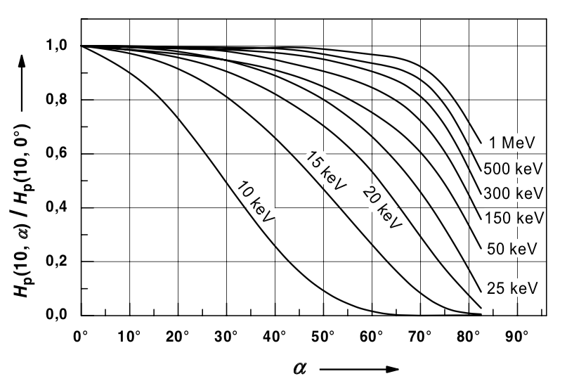 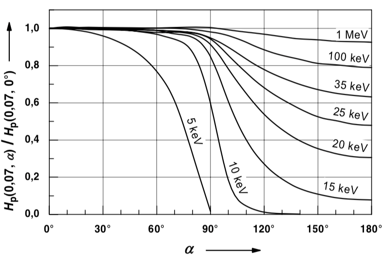 </p> </div> --- ## Solution ideas: - `\(H_\mathrm{p}(0.07)\)`: Measure angle of irradiation and apply conversion factors accordingly - Filter caps perform convolution of incoming energy spectrum - Optimize simulation for filterless sensor - Obtain filter convolutions from measurements and simulations and apply accordingly